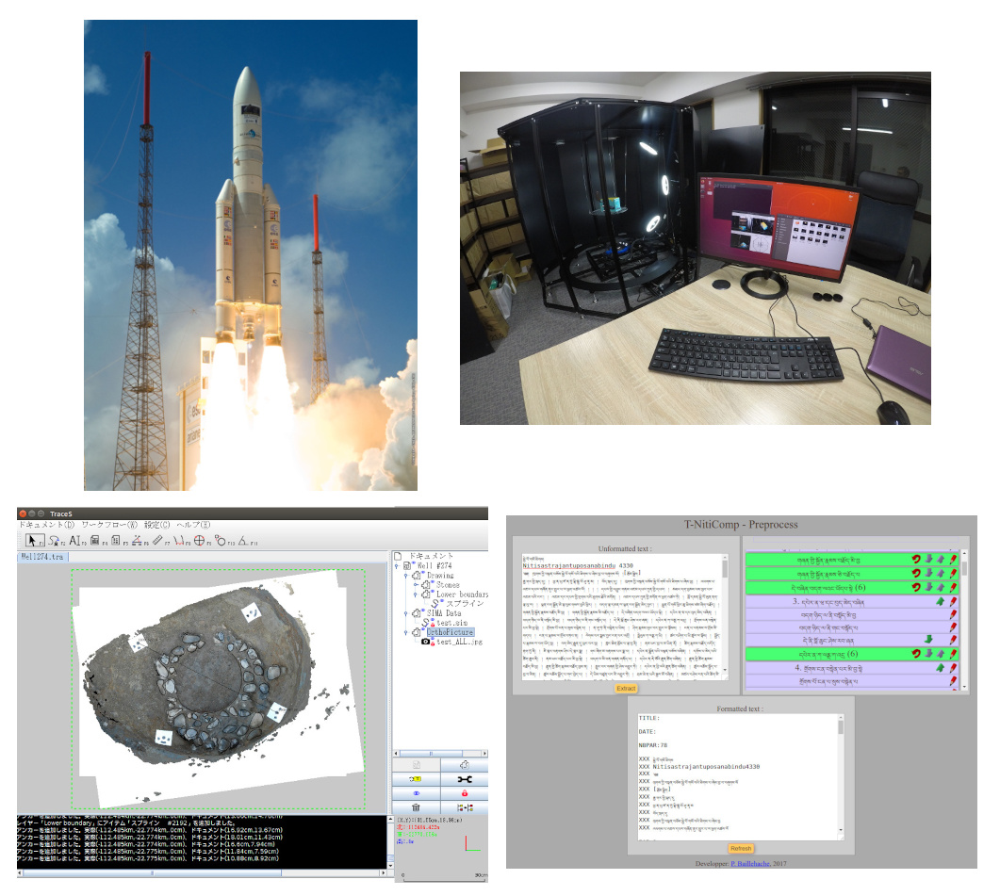
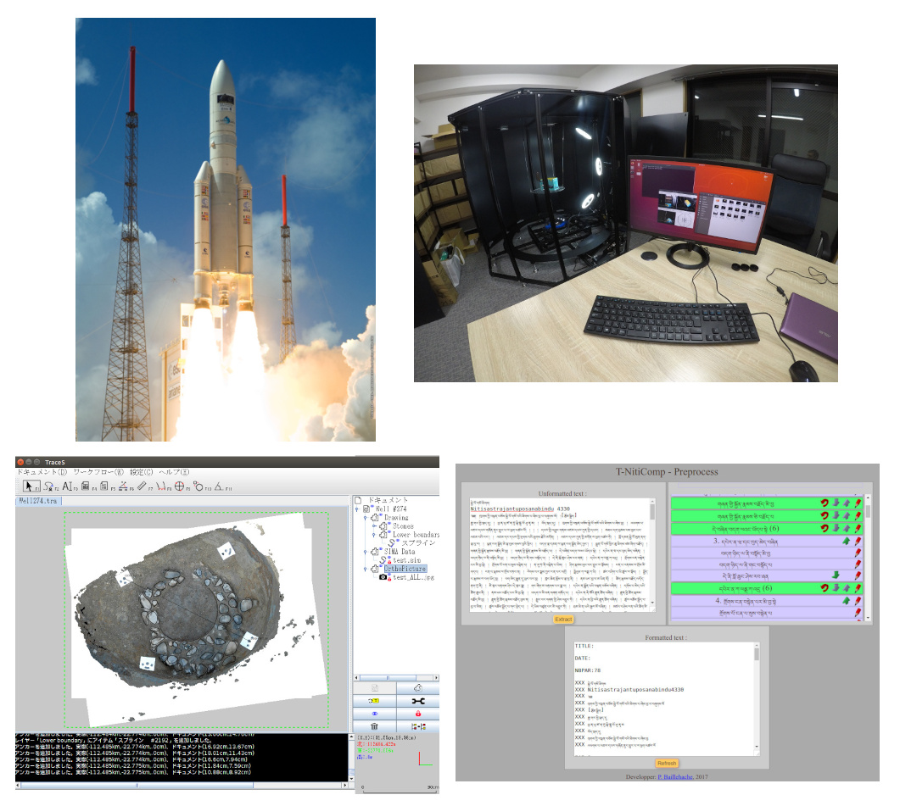
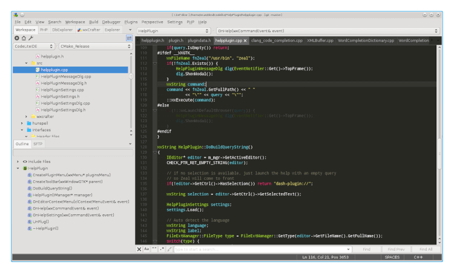
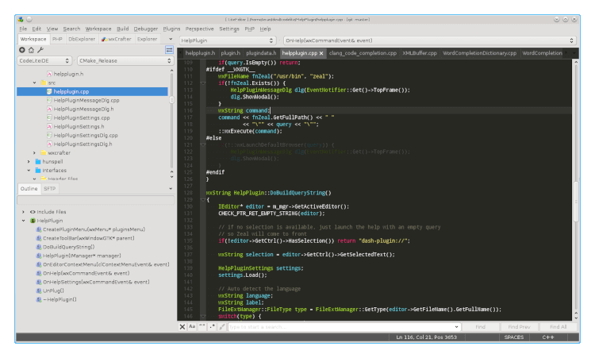

「職業人に学ぶ」 ー 万世中学校
自己紹介:
- パスカル バヤシ
- フランス人
- 18年間日本に滞在
- 京都に住んでいる
職業：

- 「ソフト開発者」
- 「プログラマー」
（英語の「programmer」）
仕事の内容:
- パソコン、スマホ、タブレットの
ソフト - ロボット、工場の機械のソフト
- インターネットのウェブサイト、
ウェブアプリ
仕事の例：


- 宇宙ロケットのソフト
- 自動撮影のロボット
- 遺物の検査の3Dソフト
- サンスクリット語の研究ソフト
プログラマーの一日：


- お客さん、ユーザーと会議する
- プログラミング言語でソフトを作る
- ソフトをテスト、修正する
- ロボットにインストール
ソフト開発者になる：
- 中学校、高校で理科系の勉強
- 専門学校、大学で学ぶ
- あるいは個人で学ぶ
（オンラインコース）
ソフト開発に合う人：
- 問題解決、パズルが好き
- 数学が好む
- 芸術、クリエイティブな人
- 英語は欠かせない
- 我慢強い
ソフト開発の喜び：
- 自らの手でなにかを作る
- ユーザーの問題を解けて喜んでもらう
- 肉体的に厳しくない
- リモートで働ける
- 就職しやすい、給料が高い
ソフト開発の苦労：
- 精神的に厳しい
- ユーザーと人間関係が難しい
- 仲間と人間関係が難しい
- 一生勉強することになる
- 目、肩、手、腰が痛くなる
職業の選択：
- 中学時代、恐竜研究者を望む
- 高校時代、先生にプログラミングを
勧められる
職業の選択：
- 今まで、フランス、カナダ、日本で、
ソフト開発者、写真家、翻訳者、
パン屋さん、ホテルのスタッフ、
映画のエキストラ、…
自分の職業の意味：
- 自分の職業は社会の中での自分の役割
- 大工屋さんが魚屋さんのがげで
食べられる、魚屋さんは大工屋さんの
かげでいいお家に住められる
自分の職業の意味：
- 全てが必要けれど一人は一つしか
できない - 一人ずつが職業一つを選んで、
大切に務めたら、皆が幸せな社会で
生きられる
将来の役割の準備：

- 好き嫌いなく、全ての科目を
大事にする - 個人研究、クラブ活動、スポーツ、
工場見学、などで多様な
経験を貯める - まわりの大人を例としてよく見る
将来の役割の準備：
- 少しだけでも経験した上、
大人になったら自分の
役割がより選びやすい - 予想ができない人生に心を
準備ができる
終わり。